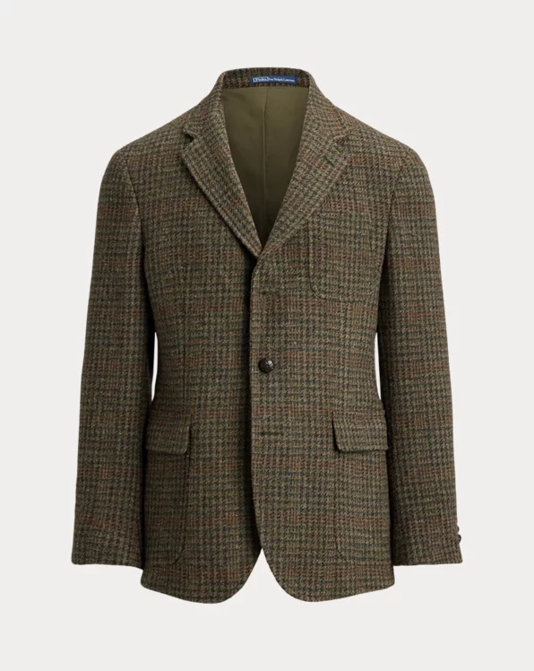
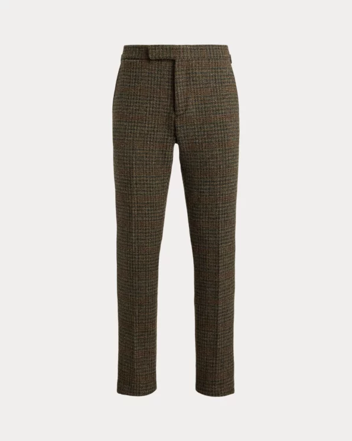
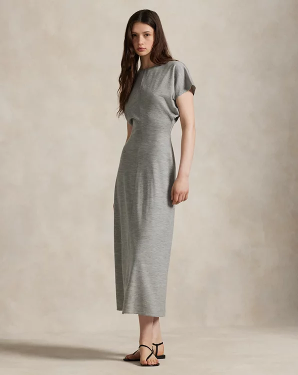
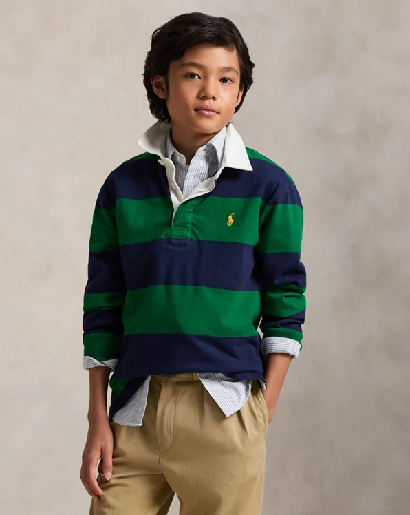

Polo Ralph Lauren
⭐⭐⭐⭐⭐

Polo Tailored Plaid Tweed Suit Jacket
⭐⭐⭐⭐⭐
35,000 Bath
This Glen plaid version is expertly tailored using a wool tweed fabric that was custom-developed with a storied Scottish mill.

Plaid Wool Tweed Suit Trouser
⭐⭐⭐⭐⭐
17,500 Bath
These trousers are made in America with plaid wool tweed that was custom-woven for Polo Ralph Lauren by storied British mill, Abraham Moon & Sons.

Cotton Long-Sleeve Dress
⭐⭐⭐⭐⭐
14,500 Bath
This versatile dress pairs a fitted cotton crewneck bodice with a sweeping A-line poplin skirt that features shirring at the waist for added volume.

Wool-Blend Dolman Dress
⭐⭐⭐⭐⭐
10,500 Bath
Clean-lined seams detail the front and back of this wool-blend interlock dress, which is cut for a subtle fit-and-flare silhouette with softly draped dolman sleeves.

The Iconic Rugby Shirt
⭐⭐⭐⭐⭐
2,300 Bath
A Polo icon, this striped rugby shirt is designed with classic details, such as a white point collar, rubber buttons, and ribbed cuffs.

Big Pony Fleece Hoodie
⭐⭐⭐⭐⭐